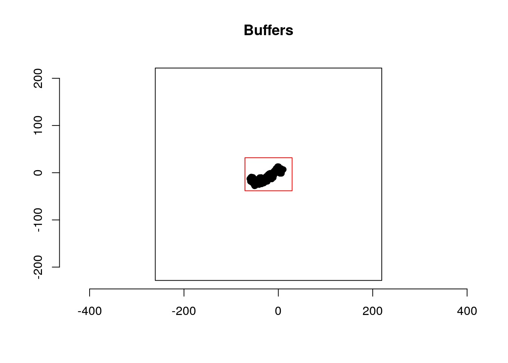
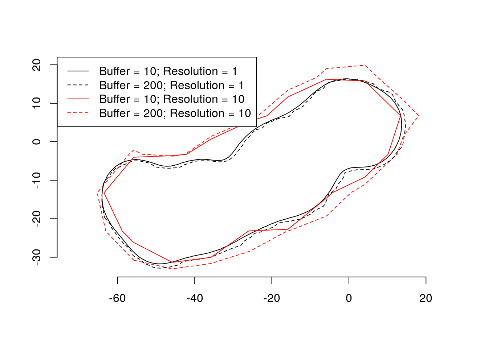

shiny limits file uploads by default to 5MB per file. This can be changed with the following command:
options(shiny.maxRequestSize=30*1024^2)Now it would be possible to upload files up to 30MB (see here for more)
The question how to chose the right output grid buffer and resolution and if the choice matters has come up several time. We try to illustrate some of the points with a simulated set of relocations and kernel density estimation (KDE).
First we simulate a series of relocation with a random walk.
library(rhr)
set.seed(1984)
n <- 1000
## simulate dummy data
path <- data.frame(x = cumsum(rnorm(n)), y = cumsum(rnorm(n)))
plot(path, type = "l", asp = 1)
Next we will create four different template grids with two different buffer widths and resolutions.
b <- list(
rhrRasterFromExt(rhrExtFromPoints(path, buff = 10), res = 1),
rhrRasterFromExt(rhrExtFromPoints(path, buff = 200), res = 1),
rhrRasterFromExt(rhrExtFromPoints(path, buff = 10), res = 10),
rhrRasterFromExt(rhrExtFromPoints(path, buff = 200), res = 10)
)
bbx <- lapply(b, function(x) rgeos::gEnvelope(SpatialPoints(t(bbox(x)))))
plot(bbx[[4]], border = "black", main = "Buffers")
plot(bbx[[3]], border = "red", add = TRUE)
points(path)
axis(1)
axis(2)
Next we can estimate KDE and plot them.
kdes <- lapply(b, function(x) rhrKDE(path, trast = x))
par(mfrow = c(2, 2))
lapply(kdes, function(x) plot(rhrUD(x), legend = FALSE))
Lets have a look at the home-range area:
sapply(kdes, rhrArea)## [,1] [,2] [,3] [,4]
## level 95 95 95 95
## area 1839.55 1899.88 1968.614 2385.633We would expect all for areas to be equal, but they are not. We see that differences are smaller between the first two elements than the last two elements. If we plot the isopleths that are used to compute the areas it becomes clearer why this maybe the case.
par(mfrow = c(2, 2))
sapply(kdes, plot, legend = FALSE)
Plotting the isopleths from the different scenarios in one plot makes it even clearer.
par(mfrow = c(1, 1))
plot(rhrIsopleths(kdes[[4]]), lty = 2, border = "red")
plot(rhrIsopleths(kdes[[1]]), add = TRUE)
plot(rhrIsopleths(kdes[[2]]), lty = 2, add = TRUE)
plot(rhrIsopleths(kdes[[3]]), lty = 1, border = "red", add = TRUE)
legend("topleft", lty = c(1, 2, 1, 2), col = c("black", "black", "red", "red"),
legend=c("Buffer = 10; Resolution = 1", "Buffer = 200; Resolution = 1",
"Buffer = 10; Resolution = 10", "Buffer = 200; Resolution = 10"))
axis(1)
axis(2)
What does this mean?
<script type="text/javascript">
/* * * CONFIGURATION VARIABLES: EDIT BEFORE PASTING INTO YOUR WEBPAGE * * */
var disqus_shortname = 'rhr'; // required: replace example with your forum shortname
/* * * DON'T EDIT BELOW THIS LINE * * */
(function() {
var dsq = document.createElement('script'); dsq.type = 'text/javascript'; dsq.async = true;
dsq.src = '//' + disqus_shortname + '.disqus.com/embed.js';
(document.getElementsByTagName('head')[0] || document.getElementsByTagName('body')[0]).appendChild(dsq);
})();
</script>
<noscript>Please enable JavaScript to view the <a href="https://disqus.com/?ref_noscript">comments powered by Disqus.</a></noscript><script type="text/javascript">
/* * * CONFIGURATION VARIABLES: EDIT BEFORE PASTING INTO YOUR WEBPAGE * * */
var disqus_shortname = 'rhr'; // required: replace example with your forum shortname
/* * * DON'T EDIT BELOW THIS LINE * * */
(function() {
var dsq = document.createElement('script'); dsq.type = 'text/javascript'; dsq.async = true;
dsq.src = '//' + disqus_shortname + '.disqus.com/embed.js';
(document.getElementsByTagName('head')[0] || document.getElementsByTagName('body')[0]).appendChild(dsq);
})();
</script>
<noscript>Please enable JavaScript to view the <a href="https://disqus.com/?ref_noscript">comments powered by Disqus.</a></noscript>